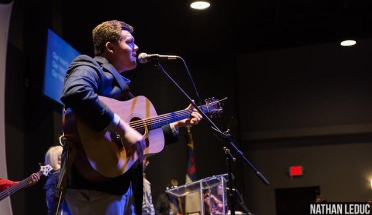

My name is Sam Bahde, and this website will give you an "elevator pitch" of my life. Sit back and enjoy the ride-Anonymous |  |
I am a college student at the University of Georgia in Athens, GA. Up until moving to college, I lived in Columbus, GA, my birthplace and the home of my family.
One of my many hobbies is playing the guitar. Over the past three years, I have played with my church, The River of Columbus, in all sorts of services and special events. Although I am in college now, I have joined a local church band here in Athens which I play with currently.
I also thoroughly enjoy sports of all kinds, particularly Major League Baseball. I have followed the Atlanta Braves for most of my life, and attend games regularly in Atlanta during the season. Alongside baseball, I am an avid football fan, due to being raised in a Georgia Bulldog family. I also enjoy watching professional golf when able, and hope to attend The Masters Golf Tournament in the future.
For the past eight years, I have worked at a condominium complex in Columbus, GA in janitorial services, ranging from mopping hallways to scrubbing toilets. I started working here to help my parents with their part time job, but I eventually was able to clean full units by myself, making the process go by much quicker and helping them in their work.
This past summer in 2016, I was hired by Malo's Precision Plumbing for a summer job. I had no experience in plumbing before this, so the whole skill was an adventure to learn this summer. Not only did we work normal service calls, but we also "did a slab," which is installing a full pipe system for both water and plumbing, starting before the concrete was poured and ending after the building was constructed. I am thankful for the opportunity that I was offered this past summer, which also gave me an inside look at how a small business was run. I look forward to my next work opportunity.
Email: sjb26099@uga.edu
Facebook: Sam Bahde's Profile